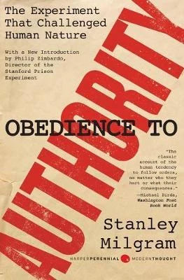

|  |
|
Price: $10,40
|
| Overview |
|---|
|
Auhor: Stanley Milgram In the 1960s, Yale University psychologist Stanley Milgram famously carried out a series of experiments that forever changed our perceptions of morality and free will. The subjects-or "teachers"-were instructed to administer electroshocks to a human "learner," with the shocks becoming progressively more powerful and painful. Controversial but now strongly vindicated by the scientific community, these experiments attempted to determine to what extent people will obey orders from authority figures regardless of consequences. "Milgram's experiments on obedience have made us more aware of the dangers of uncritically accepting authority," wrote Peter Singer in the New York Times Book Review. Obedience to Authority is Milgram's fascinating and troubling chronicle of his classic study and a vivid and persuasive explanation of his conclusions. In times of crisis, the great works of philosophy help us make sense of the world. The Harper Perennial Resistance Library is a special five-book series highlighting short classic works of independent thought that illuminate the nature of truth, humanity's dangerous attraction to authoritarianism, the influence of media and mass communication, and the philosophy of resistance-all critical in understanding today's politically charged world. |